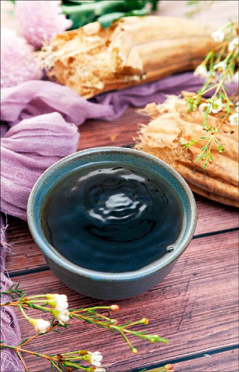
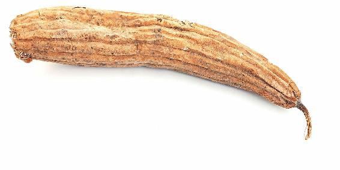

初秋，正是您储备一样食材的好时机，在此，我想先请您看一首明代诗人张以宁写的诗：“黄花翠蔓子累累，写出西风雨一篱。愁绝客怀浑怕见，老来万缕足秋思。”
这首诗写的是什么呢？就是丝瓜。
有些朋友认为丝瓜是夏天吃的，其实，秋天也是可以吃丝瓜的。
丝瓜是在夏末秋初的时候结瓜，在初秋的时候吃它是很应时的。
我们看古人写的诗，凡是关于丝瓜的，基本上都跟秋风、秋雨有关系，这说明古人观察得非常细致，他们发现丝瓜总是要到了秋天才会结子，才会老，所以才写道：“老来万缕足秋思。”


秋天的老丝瓜里面有千丝万缕，这是我们吃嫩丝瓜的时候感受不到的，而老丝瓜里的千丝万缕是一味非常好的药材。
如果您去药店，会发现有一味中药的名字就叫丝瓜络。
丝瓜络在平时也会用到，可以用它来洗碗。
把老丝瓜的干皮和肉都搓掉，把里面的籽儿都掏出来，剩下的就是用来洗碗的丝瓜络了。现在也有很多朋友用它来搓澡。
做中药的丝瓜络煮水喝下去，可以清洁身体。丝瓜的千丝万缕，其实就是一种络，我们把它叫作丝瓜络，它是可以通我们经络中的络脉的。
中药里有两样东西可以通络脉，而且都很有效。一个是橘络，也就是橘皮里面的那种白色丝状物；另一个就是丝瓜络。
人体的经络分为两种。一种是粗的、大的，叫作经脉；一种是非常细小的，叫作络脉。
经脉在全身有十几条，而络脉有无数条，它遍布在人体全身，是网状的一个结构。
络脉有很多的分支，在身体上的每一个角落里都有。
一般来说，病邪如果躲在人体的一些细微的络脉里面，就像藏在房间角落里的灰尘，很难下手清除干净。而橘络和丝瓜络，就非常擅长钻进人体这样一些细小的络脉里进行清扫工作，这就叫通络脉。
当一个人患有慢性病的时候，病邪就会慢慢地深入身体里的络脉里面。因此，久病的人、长时间亚健康的人，络脉往往都会有瘀阻，而这样的瘀阻是很难被祛除的。
如果这些瘀阻不能被祛除，那慢性病或者亚健康就很难调理。
因此，我们在调理慢性病或者亚健康的时候，往往都要用到通络脉的食物，如橘络和丝瓜络。
细分一下它们两个的不同功效：橘络偏重于疏通络脉中的痰和瘀；而丝瓜络偏重于疏通络脉中的风和湿。
因此，风湿重的人，比如，有关节炎、月子病、痛风的人，都可以用丝瓜络煮水来调理。
而血脂高的人，有脂肪肝的人，或者血瘀体质的人，就适合用橘络来调理。
丝瓜络对于痛风的患者来说，是有特别调理作用的。如果您要预防痛风发作的话，那就不妨用连皮带籽的老丝瓜络煮水，平时拿它当茶喝。丝瓜老了以后，它们挂在枝头上是不会掉下来的。一直等到丝瓜叶子都枯了，它们还依然挂在那里。这时候，它们里面就都是千丝万缕的丝瓜络了，而外面的丝瓜皮会变得黑黑的、干干的。您可以把它们连皮带籽完整地一起保存。
当我们要用的时候，就把干的老丝瓜洗干净，然后连皮带籽一起用刀切碎，再把它冷水下锅煮一小时。煮好的水，您每天把它当茶喝就可以了。
其实，一个人之所以会痛风发作，那是身体有湿热的表现。
有痛风的人，或者是想预防痛风的人，经常用干的老丝瓜煮水喝，就能祛除这种湿热，有效地防止痛风病的发作了。
不要等到痛风已经发作的时候再临时抱佛脚，那个时候，效果就慢了。
有痛风的朋友，或是尿酸高的朋友，不妨平时就用干的老丝瓜煮水来喝，慢慢地调理。